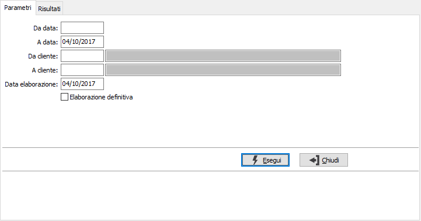
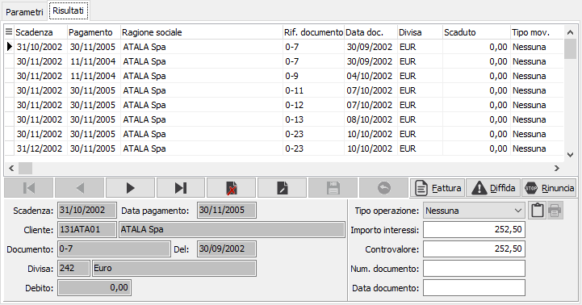

Gestione interessi di mora
La procedura risponde alle esigenze derivanti dall’applicazione del D.Lgs. 231/2001 che recepisce la direttiva CEE 2000/35 inerente la tutela dei creditori.
Il programma permette di calcolare gli interessi di mora per le fatture ancora aperte oppure pagate in ritardo rispetto alla data scadenza.
La finestra si articola su due pagine, una per i parametri ed una per i risultati.

DA DATA: eventuale data documento da cui deve iniziare l'operazione. Confermando a vuoto, l'operazione inizia dalla prima partita valida.
A DATA: eventuale data documento con cui deve terminare l'operazione. Confermando a vuoto, l'operazione termina con l'ultima partita valida.
DA CLIENTE: indicare il codice del cliente da cui si intende iniziare l'operazione; confermando a vuoto l'operazione inizia dal primo codice valido. Sul campo sono attive le funzioni di ricerca (F9).
A CLIENTE: indicare il codice del cliente con cui si intende far terminare l'eliminazione; se si conferma a vuoto l'operazione termina con l'ultimo codice valido. Sul campo sono attive le funzioni di ricerca (F9).
ELABORAZIONE DEFINITIVA: se la casella contiene la spunta è consentita la manutenzione dei campi spiegati nella sezione successiva, altrimenti vengono solamente visualizzate le partite oggetto dell'operazione per consultazione o eventuale ristampa di documenti.
La pressione sul pulsante Esegui inizia l'elaborazione e visualizza le partite oggetto dell'operazione.

In caso di elaborazione definitiva, l’operatore dispone di tre possibili alternative applicabili tramite il campo 'Tipo operazione':
la prima è quella di emettere la fattura per interessi; in questo caso devono essere inseriti gli estremi della fattura di addebito interessi che è stata emessa manualmente;
la seconda è quella di stampare una lettera di rinuncia agli interessi;
la terza è quella di stampare una lettera di intimazione al pagamento del debito.
Per consentire l’applicazione di operazioni a più gruppi di fatture, sono presenti i bottoni accanto al navigatore (Fattura, Diffida e Rinuncia). In questo modo si possono selezionare una serie di fatture, con il doppio clic del mouse sulla griglia, ed applicare a tutte le stesso tipo di operazione (generazione fatture, lettera di diffida, lettera di rinuncia).
Il pulsante Stampa è attivo se già assegnata una lettera per effettuare eventuali ristampe, anche in fase di consultazione. La pressione del pulsante Salva sulla toolbar consente di effettuare il salvataggio definitivo dei dati inseriti o modificati e richiede la conferma per eventuali stampe impostate; se si è scelto di generare la fattura di interessi viene richiamato il programma di generazione fatture.